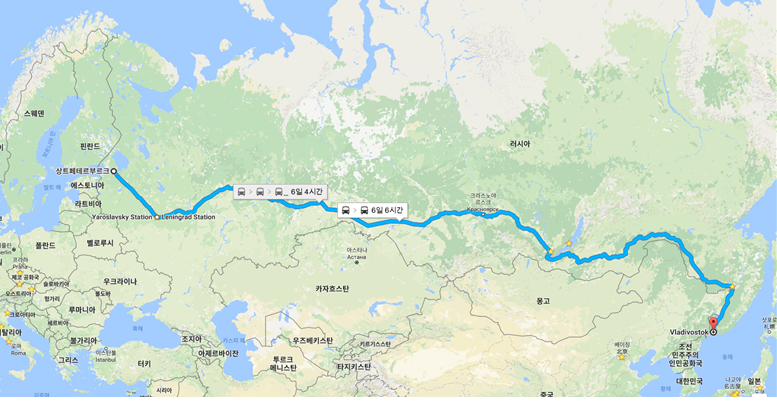

| 시베리아 횡단 열차 |
| 1 day |
블라디보스토크-치타 |
블라디보스톡-모스크바행 급행열차로 열차번호 01번에 해당하는 열차를 탄다.
한국에서 출발하면 가장 먼저 지나갈 지역. 수많은 숲과 계곡과 황무지를 지나 중국 국경지역인
아무르 강을 지나는 구간도 많이 있는데 건너편 중국 땅도 보인다. 하바롭스크에 도착하기
직전에 아무르 강을 지나는 2.6km의 하바롭스크 대교를 지나는데 러시아 루블 지폐에
도 찍혀있는 횡단철도에서 가장 긴 다리다. 이후 연해주로 들어서면 바깥의 숲이 그동안의
시베리아식 침엽수 타이가가 아니라 한반도의 숲과 비슷해진다. 블라디보스토크역에
도달하기 한참전에 선로가 분기되는데 북한으로 들어가는 블라디보스토크-하산선이다.
|
| 2 day |
치타-이르쿠츠크 |
북쪽으로 바이칼 호안을 따라가는 구간이 몇 시간 동안 펼쳐진다. 횡단철도 선상에서
가장 바깥 풍경이 아름다운 구간 중 하나. 호수는 수평선이 보여서 바다나 다름없는
풍경을 보여준다. 이 구간에서는 정차하는 역 승강장에 오물생선을 파는 사람들이
대기하고 있다. 바이칼을 지나면 여태까지의 평평한 편이었던 서시베리아 지역과 달리 구릉이 많아
서 탁 트인 풍경을 보기 어렵고 계곡이나 산맥이 많다. 6,130km 지점이 횡단철도
선상에서 가장 해발고도가 높은 지점이다(해발 1,040m) 울란우데를 지나서 몽골 울란바토르와
중국 베이징으로 가는 몽골 종단철도가 분기하고 치타를 지나서 중국 하얼빈 쪽으로
가는 만주 횡단철도가 분기한다. |
|
| 3 day |
이르쿠츠크-노보시비르스크 |
평평한 지형에 자작나무가 끝없이 늘어선 풍경이 반복되는 편.
크라스노야르스크와 예니세이 강을 거친다. |
| 4 day |
노보시비르스크-예카테린부르크 |
예카테린부르크를 지나 시베리아가 러시아 행정구역상 공식적으로 시작되는 지점이다.
슬슬 시베리아스러운 침엽수 가득한 타이가 지대가 반복되며 지나가는 주요 도시는
튜멘, 옴스크 등이 있다. 시베리아에서 가장 큰 도시인 노보시비르스크에 도착하기 직전에 오브 강을
지난다. 여기에 도착하면 대강 출발 3일째가 된다. |
| 5 day |
예카테린부르크-니즈니노브고로드 |
드넓은 볼가 강을 철교로 지나서 평평한 지형에 끝없이 펼쳐진 농장과 간간 히 보이는 숲,
목가적인 목조 주택과 별장(다차)들이 이어진다. 키로프, 페름을 거쳐 유럽과 아시아의 경계
선이라는 우랄 산맥을 지나가는데 상당히 유명하지만 유명세에 비해 별로 높지는 않고 낮은
산이 계속 지나간다. 열차마다 다르지만 예카테린부르크에 도착하면 대강 모스크바에서
출발한 지 이틀째쯤 된다. |
| 6 day |
니즈니노브고로드-모스크바 |
횡단철도의 첫 시작점. 그러나 한국인이 이 철도를 탄다면 구간일
가능성도 높다. 대도시 모스크바의 통근권이기 때문에 횡단철도상에서 가장 도시화된 구간을
지나서 블라디미르를 비롯한 유서 깊은 황금의 고리상의 소도시들을 지나간다.
니즈니노브고로드까지는 5시간이 좀 넘게 걸리는데 시베리아 횡단철도에서는 극히
일부 구간일 뿐이지만 이미 대한민국을 가로지르는 경부선에 맞먹는 구간이다 |
| Map |
|
 |